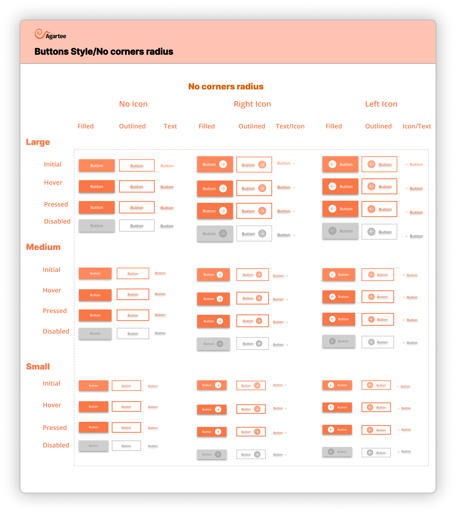
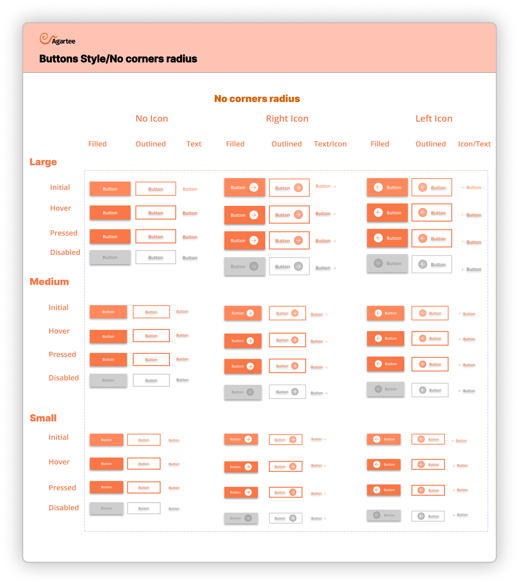

Building and scaling a design system for Agartee Technology Inc.


Project information
- ROLEUX/UI Designer
- TEAMProduct Manager, Engineers
- TIMELINEJune 2024 - Present
- TOOLSFigma, Notation, Canva
- Agartee DS Overview Video
Introduction
Agartee Technology's existing design resources were outdated and lacked the structure necessary for efficient and consistent design. The previous system, limited to basic color palettes and typography specifications, proved inadequate for the complexities of designing boththeir redesigned website and new patient data management application. This project directly addresses this deficiency by creating a fully functional, modern design system, incorporating best practices for component reusability, style consistency, and future scalability. The resulting system significantly improves the design process and ensures a cohesive user experience across all platforms.
Project Overview
This project resulted in a comprehensive design system for Agartee Technology, aimed at unifying the design language across their redesigned website and new patient data management application. The system includes a modular component library, a typography system, a cohesive color palette, and detailed style guides, all of which ensure consistency, scalability, and ease of use for future development efforts.
Problem Statement
What strategies can be employed to create a scalable and maintainable design system for Agartee Technology that enhances user experience across multiple platforms while remaining accessible to designers and developers?
Challenges
- Maintaining Consistency Across Platforms: Ensuring a unified brand experience and consistent user interface across the diverse requirements of a website and a data-heavy mobile application posed a significant challenge. Variations in screen sizes, input methods, and user expectations required careful consideration.
- Scalability and Future-Proofing: Designing a system flexible enough to accommodate future features, updates, and potential expansion of Agartee Technology's services was crucial. The system needed to be adaptable without requiring major overhauls.
- Balancing Stakeholder Needs: Aligning the needs of designers, developers, and end-users (nurses, pharmacists, etc.) required careful onsideration and communication. Finding a design language that met everyone's needs was a delicate balancing act.
- Data Visualization and Accessibility: Effectively presenting complex patient data in a clear, concise, and accessible manner within the mobile application was a key challenge. The design needed to be both informative and easy to understand for users with varying levels of technical proficiency.
- Clear and Concise Documentation: Creating comprehensive and easily understandable documentation for the design system was essential for its adoption and maintenance by the development team. This required a well-structured and user-friendly guide.
- Integration with Existing Systems: Seamless integration of the design system with Agartee Technology’s existing infrastructure and workflows was critical. This required thorough consideration of data security, privacy, and compatibility with existing technologies.
Solutions
- Modular Component Library: Developed a comprehensive and reusable component library in Figma, ensuring consistency across both the website and the mobile application. This library included pre-built components for buttons, forms, and other UI elements.
- Comprehensive Style Guide: Created a detailed style guide that included specifications for typography, color palettes, spacing, and other design elements. This guide provided clear guidelines for designers and developers.
- Iterative Design Process: Employed an iterative design process, incorporating regular feedback from stakeholders and users to refine the design system and ensure it met their needs.
- Version Control System: Implemented a version control system (e.g., Abstract) to manage and track changes to the design system, ensuring collaboration and preventing conflicts.
Fundations
Fundations cover the core components, including color systems, typography, iconography, imagery, and accessibility guidelines. All aspects are documented as tokens in Figma, facilitating seamless integration for both designers and developers.
How can I ensure this(Atomic DS) is beneficial for designers and developers?
Reflecting on the core challenge – how to develop a design system that is scalable, maintainable, and accessible for both designers and developers – I recognized the importance of incorporating the perspectives of both groups. To achieve this, I collaborated with a front-end developer to enhance the design system. Together, we integrated design token and CSS classes into the Figma file. This approach allowed us to align our thinking and improve our communication, ensuring that the design system meets the needs of all stakeholders effectively.
Each component is designed based on the principles of atomic design, ensuring consistency, reusability, and scalability across the user interface.
- Atoms: Basic UI components like buttons and input fields.
- Molecules: Functional elements that combine atoms, such as a form.
- Organisms: More complex structures that integrate multiple molecules and atoms.
Color Styles:
This section defines the core color palette for the Agartee project, encompassing action colors, grayscale variations, and alert status colors. These styles ensure visual consistency and accessibility across the application.
Additionally, Figma tokens have been created for developers to streamline the implementation of these colors in code. Each token is linked to a specific color style, allowing for easy access and integration within design and development workflows.
Tokens Overview:
- Action Colors: Define primary interaction elements (e.g., buttons, links).
- Grayscale: Provide neutral colors for backgrounds, borders, and text.
- Alert Colors: Indicate status messages (Informative, Success, Critical, Warning) to guide user actions.
Typography:
This section defines the typography system to outline font choices, scaling, hierarchy, and usage guidelines. All typographic styles are defined as Figma tokens for easy access and implementation.
Grid System:
The Agartee design system incorporates a versatile grid system tailored for mobile, laptop, and desktop devices. This grid framework serves as the foundation for responsive layout design, ensuring consistency and alignment across various screen sizes.
Iconography:
System icons, also known as action indicators, play a crucial role in enhancing user experience within components. These icons come in various scales, typically ranging from 16px to 24px, and are designed to provide visual cues for user interactions, such as buttons, toggles, and menus.
Level 1: Atoms
Buttons:
 

Level 2: Molecules
Input Fileds:
⌘ Color Styles & Naming Conventions
The Color Styles & Naming Conventions section serves as a comprehensive guide for developers, ensuring consistency and clarity in the application’s visual design.
The color palette is organized into distinct categories, each with specific naming conventions that enhance usability and understanding. The categories include:
- Primary Colors - Example include: Primary/100 (Lightest variant)
- Accent Colors - Example include: Accent-1/100 (Lightest variant)
- Neutral Colors - Example include: Neutral/100 (Lightest shade)
- Informative Colors - Example include: Success/100 (Green for successful operations)
- Text Surface Colors - Example include:Text-Surface/light (Primary text on dark backgrounds)


⌘ Typography Guidelines for Developers
The system utilizes two primary font families—'Hind' and 'Open Sans'—selected for their readability, versatility, and visual appeal.
It's the specific font styles and sizes for various text elements within the application. This includes:
- Headings - 'Hind' is used for headings (H1, H2,H3, H4, H5, H6)
- Body Text - 'Open Sans' is employed for body text (Regular, Semi-Bold, Bold)
- Buttons - Button text utilizes a specific style of 'Hind' (Bold or Semi-Bold)
- Subheadings - Using 'Open Sans' to maintain a cohesive hierarchy
⌘ Alert Cards and Notification Messages
The Alert Cards and Notification Messages section provides a comprehensive guide for developers on the design and implementation of alert cards and notification messages within our application. The categories include:
- Anatomy of Alert Cards: Alert cards consist of a title, message body, action buttons, and icons. Each component plays a crucial role in conveying the intended information effectively.
- Layout and Spacing: They maintain uniform margins and padding to ensure a clean, organized appearance.

This section details the user research conducted throughout the Agartee Design System project and how the findings directly informed design iterations. A user-centered approach was crucial to ensure the system's usability and effectiveness for all stakeholders, including the design team, front-end and back-end developers, and product manager.
Methodology:
As the sole UX/UI designer for the Agartee Design System, I employed a user-centered approach throughout the development process. This involved conducting moderated usability testing sessions with two participants—one representing the product manager and the other representing the developer user group. The usability testing focused on evaluating key components of the design system, including color styles, typography, and iconography. Each participant completed a series of specific tasks within the Figma file, while I closely observed their interactions and documented their feedback. This direct engagement with representative users provided invaluable insights that informed the iterative refinement of the Agartee Design System. By understanding the pain points and workflows of both product manager and developers, I was able to optimize the system’s functionality, accessibility, and overall user experience.
Key Findings:
The usability testing sessions yielded several key insights that informed the development of the Agartee Design System:
- Consistency and Predictability: Both the product manager and developers participants emphasized the importance of a consistent visual language and predictable interactions throughout the design system. They highlighted the need for clear, well-documented guidelines to ensure seamless integration across projects.
- Developer-friendly Documentation: The developer participant noted the need for comprehensive, developer-oriented documentation, including clear instructions for implementation, code samples, and edge case handling. This feedback guided the creation of robust developer resources within the design system.
- Accessibility Considerations: Both participants emphasized the importance of designing for accessibility from the outset. They provided suggestions for enhancing color contrast, ensuring keyboard navigability, and incorporating clear labeling and alt-text for inclusive experiences.
- Responsive Flexibility: While the initial design system focused on desktop-centric layouts, the participants stressed the need for responsive design principles to accommodate varying screen sizes and device types. They provided feedback on areas that required improved responsiveness and adaptability.
Current Status of the Atomic Design System:
The Atomic Design System for Agartee Technology is currently a work in progress. While I have developed foundational components and established a design framework, the system is not yet fully complete. My focus has been on creating and iterating the design system specifically for the patient data management application, as the company prioritized the redesign of the current website during this period. I am actively working on enhancing the design system to ensure it meets all user needs and integrates seamlessly across platforms. Ongoing iterations will further refine the components and expand the system's capabilities in response to user feedback and evolving project requirements.